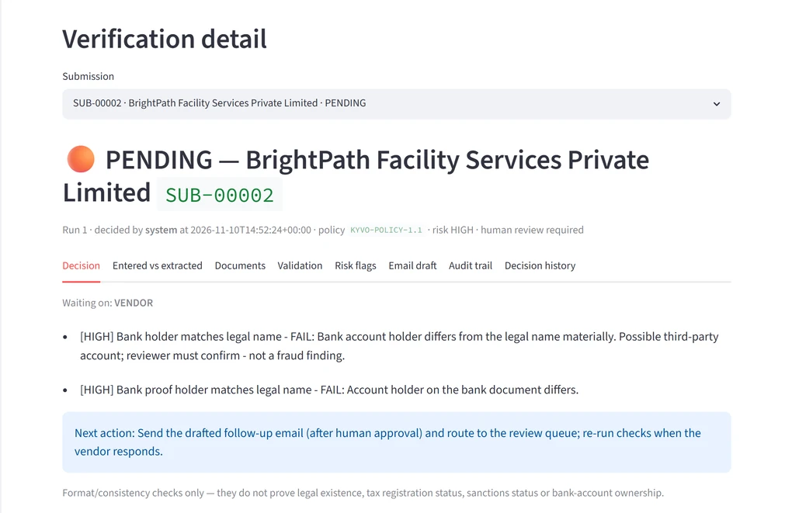
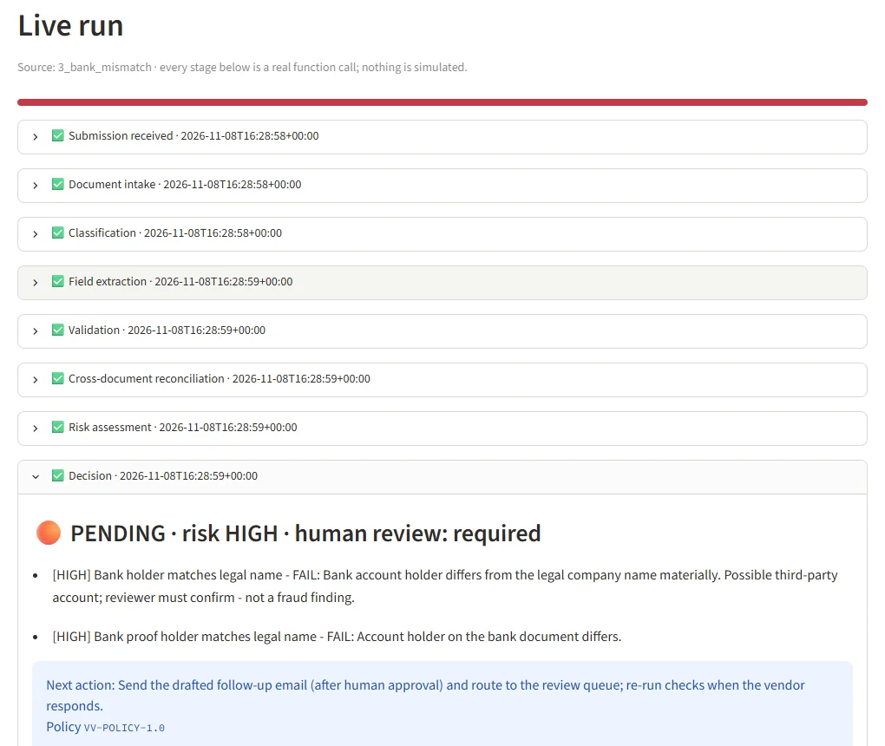
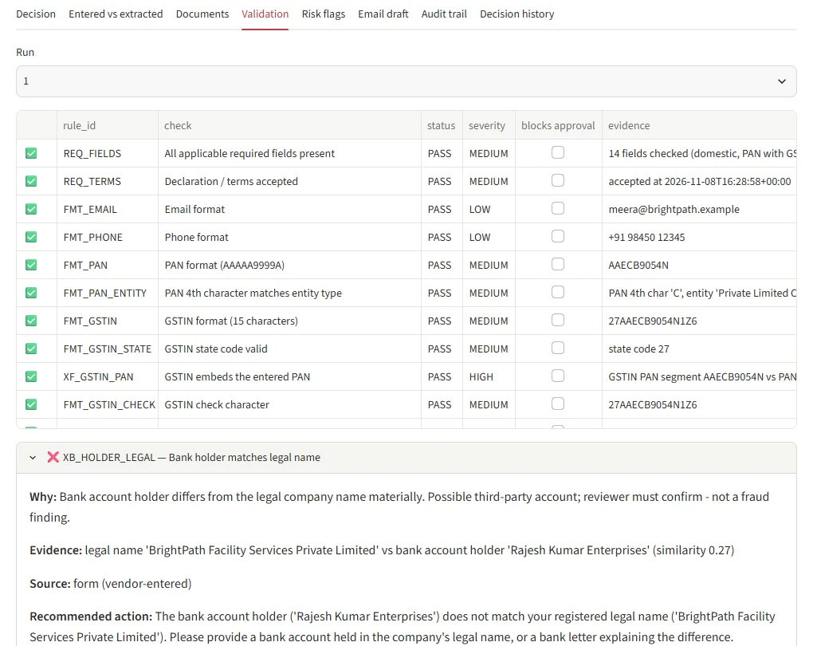
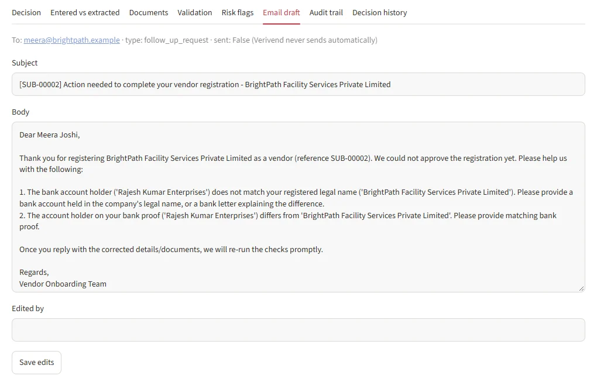

APPROVED
Every applicable blocking check is PASS. All required fields and documents are present, document types match, formats pass, cross-document checks agree and no duplicate is found.
One blocking miss is enough to hold.
Verivend reads a vendor's form and PDF documents, checks them against written rules, and returns APPROVED, PENDING or REJECTED. Every decision comes with the evidence behind each check, a full audit trail and an editable follow-up email draft.

The policy never invents a reason to reject, and never passes something it could not verify. Uncertainty goes to a person, not to auto-approval.
Every applicable blocking check is PASS. All required fields and documents are present, document types match, formats pass, cross-document checks agree and no duplicate is found.
One blocking miss is enough to hold.
Any FAIL, WARN or NOT_CHECKED result that blocks approval. That covers a missing, wrong or unreadable document, an unsupported country, an invalid format, a name or bank mismatch, a duplicate, or an uncertain extraction.
Shown with its evidence so a reviewer can act.
Only a hit on the written policy blocklist, which is empty by default, or a human reviewer's confirmed rejection with a mandatory comment.
Fuzzy name differences never reject.
Each decision also records a risk level taken from the most severe blocking check, the next action, whether human review is required, and the policy version.
workflow.run_workflow is the single entry point for both the app and the tests. It yields one event per stage as the stage finishes. The Live Run page renders those events as they arrive, with no timers.
The form is normalised, linked to an existing vendor by PAN, tax ID or name, and the required documents are listed.
Each file is checked against the allowed types and the 5 MB demo limit, stored with a SHA-256 hash, and read with pdfplumber.
A weighted keyword model compares what each file looks like with what it was uploaded as. Unreadable scans are marked, not guessed.
Regex extraction keeps the page and the evidence text for every value.
Conditional required fields, India-specific formats and the country rule registry.
Form values are compared with what the documents say.
Duplicate identifiers and the policy blocklist.
The three-status policy turns the checks into a verdict.
A follow-up or confirmation email is drafted and stored unsent.
The run counts the rows actually written to SQLite for the submission.

Each rule produces a status, a severity, whether it blocks approval, the evidence it used, its source and a recommended action.
reviewer_corrected and the original stays.
Each decision produces a draft addressed to the vendor's email. A pending submission gets a follow-up request that lists what is missing or wrong. An approved one gets a confirmation.
sent=0. Nothing is sent automatically.
The repository ships a generator and nine fictional scenarios for common edge cases in vendor onboarding. Each one has an end-to-end test in tests/test_scenarios.py that asserts the expected outcome.
| # | Scenario | Outcome | Flag | Test |
|---|---|---|---|---|
| 1 | Domestic PAN and GST, everything consistent | APPROVED | None | test_ |
| 2 | Invoice uploaded as the GST certificate | PENDING | WRONG_ | test_ |
| 3 | Bank account holder differs from the legal name | PENDING | BANK_ | test_ |
| 4 | Germany submission with an Indian PAN-format tax ID. No India rules are applied. | PENDING | COUNTRY_ | test_ |
| 5 | Duplicate PAN and GSTIN, run after scenario 1 | PENDING | DUPLICATE_ | test_ |
| 6 | Domestic PAN without GST (LLP). No GST document is requested. | APPROVED | None | test_ |
| 7 | International vendor with a US EIN. No PAN, GST or IFSC required. | APPROVED | None | test_ |
| 8 | Brazil, where no country rule is configured. The tax ID check is NOT_CHECKED, never a false pass. | PENDING | UNSUPPORTED_ | test_ |
| 9 | Scanned, image-only bank proof. The file is kept and marked unreadable. | PENDING | UNREADABLE_ | test_ |
The same file has 15 more tests for the policy and edge cases, including the blocklist, reviewer actions, re-runs, unsafe file names and rejected upload types.
No API key and no external service. A fresh SQLite database is created at data/verivend.db on first start, and the nine scenarios are generated if they are missing.
# Windows PowerShell
git clone https://github.com/Ashrith-work/verivend
cd verivend
python -m venv .venv
.\.venv\Scripts\Activate.ps1
pip install -r requirements.txt
streamlit run app.py # opens http://localhost:8501
python -m pytest -q # 24 tests, offlineOn macOS or Linux, use source .venv/bin/activate instead of the activate line. In the app, open New Submission and run a bundled sample scenario. Set VERIVEND_DB or VERIVEND_UPLOADS to change where data is stored.